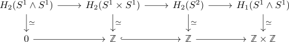

zero map on homotopy in general not nullhomotopic
Proposition
Let $f: X \rightarrow Y$ be a map between pointed anima which induces the trivial map
\begin{align*}
\pi_n(f): \pi_n(X) \rightarrow \pi_n(Y)
\end{align*}
Then $f$ is in general not nullhomotopic
Proof
a)
consider the cofiber sequence
\begin{align*}
S^1 \wedge S^1 \rightarrow S^1 \times S^1 \rightarrow S^2
\end{align*}
(here $S^1 \times S^1/(S^1\wedge S^1) \simeq S^2$ is the mapping cone up to homotopy (cf. map from the mapping cone of a cofibration to the collapse as homotopy equivalence).
It follows by homotopy group functor preserves products that
\begin{align*}
\pi_*(S^1 \times S^1) \simeq&
\begin{cases}
\mathbb{Z} \times \mathbb{Z} & \mbox{if } * = 1 \\
\mbox{} * & \mbox{else } \\
\end{cases}
\end{align*}
and
\begin{align*}
\pi_1(S^2), \pi_0(S^2) = *
\end{align*}
Hence the map
\begin{align*}
S^1 \times S^1 \rightarrow S^2
\end{align*}
is trivial on homotopy groups.
But consider the long exact sequence of homology for a mapping cone

which shows that the map
\begin{align*}
H_2(S^1 \times S^1) \rightarrow H_2(S^2)
\end{align*}
is not the zero map on homology.